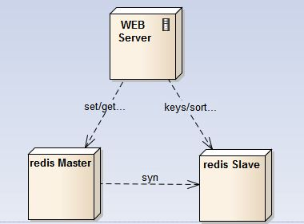
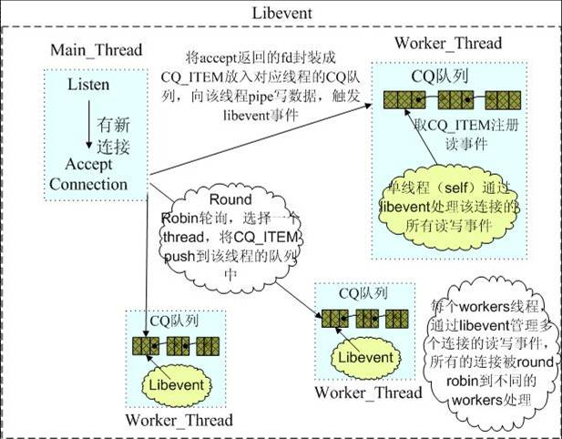
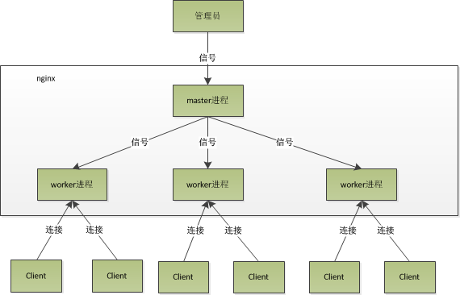
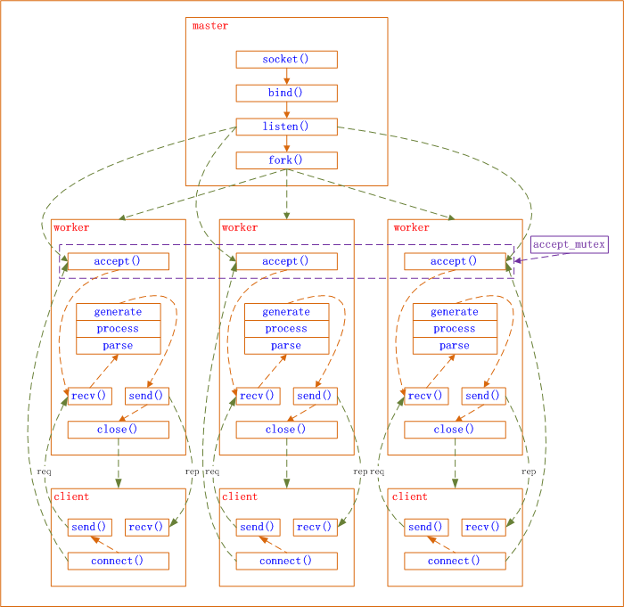

1.redis是单线程的服务器
Reactor模型就是一个不断循环等待的单独线程，就一个EvenLoop，redis是Reactor模式最简单的版本。
所以，Redis的事件循环是在单线程中进行的，因此要确保快速的进行事件处理，这样事件循环中的后续任务才不会被阻塞。
在Redis中影响时延的场景主要有三种：
- 耗时长的命令造成的阻塞；
- fork产生的阻塞；
- 持久化造成的阻塞；
耗时长的命令造成的阻塞
耗时长的命令主要包括keys、sort、smembers等。
对于keys命令，它是用于查找所有符合给定模式pattern的key，时间复杂度为O(N)， N为数据库中key的数量。当数据库中的个数达到千万时，这个命令会造成读写线程阻塞数秒。类似的命令有sunion sort等操作。
对于smembers命令，它是用于获取集合全集，时间复杂度为O(N)，N为集合中的数量。如果一个集合中保存了千万级的数据，一次性取回也会造成事件处理线程的长时间阻塞。
解决方案：
keys：将它分离出去，比如单独使用一个redis从节点专门用于keys、sort等耗时操作，通常这些查询一般不会是线上的实时业务，对时延要求不高。
smembers：smembers是线上实时应用场景中使用频率非常高的一个命令，可以从设计层面来考虑： 可以控制集合的数量。比如原来使用一个键来存储一年的记录，数据量大，我们可以使用12个键来分别保存12个月的记录，或者365个键来保存每一天的记录，将集合的规模控制在可接受的范围。

后面两个问题，平时较少用到，参考 http://webcache.googleusercontent.com/search?q=cache:tRr5yWYYvLMJ:www.tk4479.net/tian_ex/article/details/53283871+&cd=8&hl=zh-CN&ct=clnk
2.Memcache是基于libevent，libevent是个高性能网络库，也是基于Reactor模型。
1.memcached是多线程的，使用master-worker的方式，master线程监听端口，建立连接，然后顺序分配给各个worker线程。
2.每一个worker线程都有一个event loop，它们服务不同的客户端。
connection：
1) master线程和worker线程之间使用管道通信，读端加入event loop，监听可读事件。
2) 每个worker线程都有一个就绪连接队列，master线程连接连接后，将连接的item放入这个队列，然后往该线程的管道的写端写入一个connect命令。
3) 这样event loop中加入的管道读端就会就绪，worker线程读取命令，解析命令发现是有连接，然后就会去自己的就绪队列中获取连接，并进行处理。

mencached线程池分析 http://blog.csdn.net/flyqwang/article/details/18814797
属于multi-reactors模式，不管是master线程还是worker线程，都要处理事件，master只处理连接事件，worker处理读写事件。
3.Nginx是多进程服务器，Memcache是多线程服务器，但都是采用Multi-Reactors模式。


从上图可以看出
1）master进程先建好需要listen的socket后，然后再fork出多个woker进程，这样每个worker进程都可以去accept这个socket。
2）当一个client连接到来时，所有accept的worker进程都会受到通知，但只有一个进程可以accept成功，其它的则会accept失败。Nginx提供了一把共享锁accept_mutex来保证同一时刻只有一个worker进程在accept连接，从而解决惊群问题。
3）当一个worker进程accept这个连接后，就开始读取请求，解析请求，处理请求，产生数据后，再返回给客户端，最后才断开连接，这样一个完成的请求就结束了。